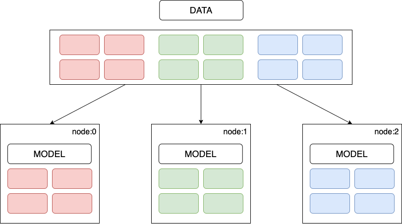
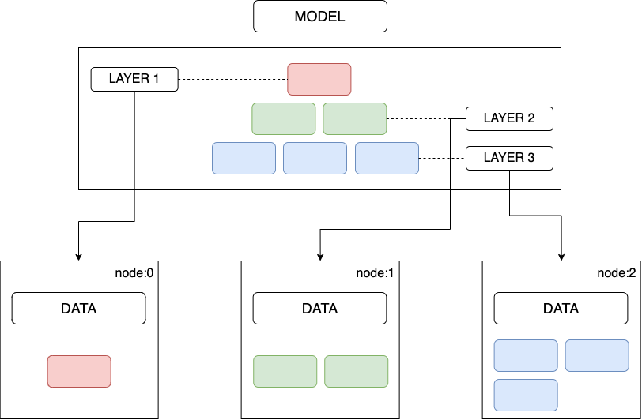
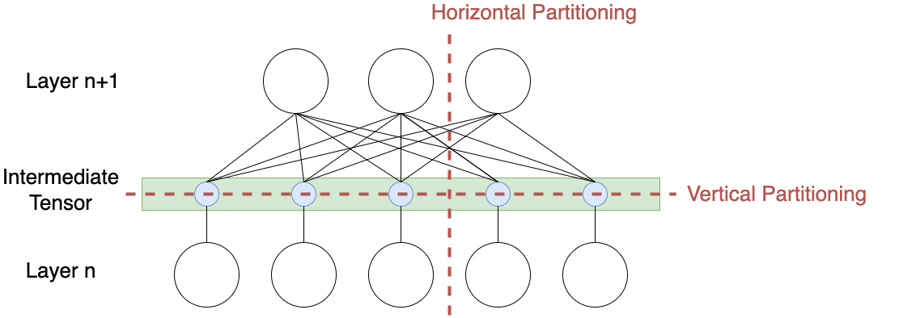
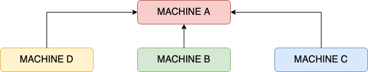
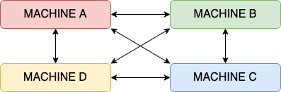
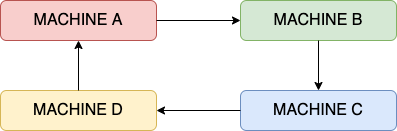
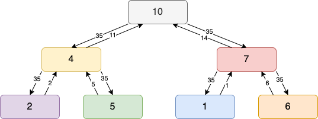
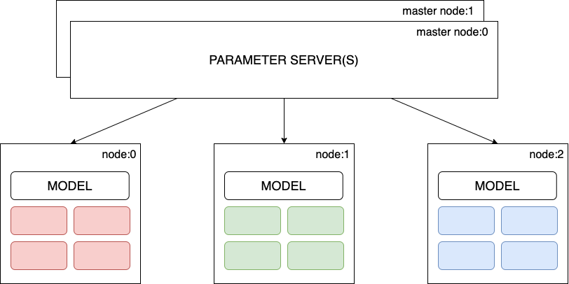
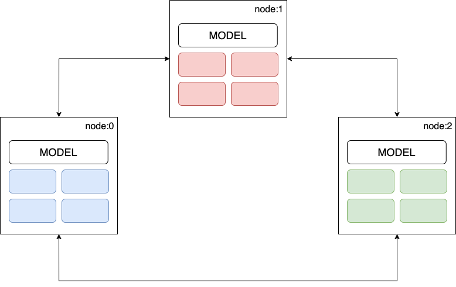

Distributed Model Training
·
System Wisdom·
#System Design
#Machine Learning 7 min read
7 min read
Porco Rosso.
Distributed Training
Deep learning is a subset of machine learning, a branch of artificial intelligence to perform tasks through experience. Deep learning algorithms are well suited and perform the best with large datasets, not to mention the need for high computation power. With the pay-per-use serverless service model, such as the google collab, training large neural networks on the cloud is easier than ever. While it’s possible to train huge models in a single multi-core GPU machine, it could take days and even weeks. Hence, this leads to the fundamental problem of reducing the training time.
Typically, any scaling problem is broadly addressed by scaling-up or scaling-out, i.e., horizontal and vertical scaling. Depending on the use case, vertical scaling has the limitation of maxing out at a point and often tends to be a lot more expensive in the long run, both in price and technical backlog.
One-liner: Distributed training distributes training workloads across multiple computation processors. Where a cluster of worker nodes works in parallel to accelerate the training process, parallelism is achieved by data parallelism or model parallelism.
Types of Distributed Training
Data Parallelism
As the name suggests, the dataset is horizontally/vertically sharded and processed parallelly. Each worker node in the cluster trains a copy of the model on a different batch of training data, communicating the computation results to keep the model parameters and gradients in sync across all nodes. The computation results can be shared synchronously, i.e., at the end of each batch computation or asynchronously.

Figure 1: Data-Parallel training.
One-liner: The entire model is deployed to multiple nodes of the cluster, and each node represents the horizontal/vertical split of the sharded dataset and the model.
Model Parallelism
On the contrary, in model parallelism, the model itself is divided into parts/layers in situations where the model size is too large for a single worker; hence a set of layers are trained simultaneously across different worker nodes. The entire dataset is copied/available to all worker nodes, and they only share the global model parameters with other workers—typically just before forward or backward propagation. Furthermore, the layers can be partitioned vertically or horizontally.

Figure 2: Model-Parallel training.
One-liner: A layer or a group of layers of the model is deployed to multiple nodes of the cluster, and the entire dataset is copied to every node.

Figure 3: Model-Partitioning horizontally or vertically.
Among the two, data parallelism is commonly used and easier to implement. The ability to train a model in batches of data (non-sequential) and contribute to the overall performance of the model is the crux of the solution. In other words, the model parameters and gradients are calculated for every small batch of data in the worker node, and at the end of it → updated weights are sent back to the initiating node → the weighted average/mean of the weights from each worker node is applied to the model parameters → updated model parameters are sent back all worker nodes for the next iteration; this leads to questions about how and when model parameters are stored and updated.
Distributed Training Loops
The two ways of carrying out distributed training loops are as follows:
Synchronous training
Once again, taking the example of data parallelism, where we divide the data into partitions/batches for each worker node to process. Every worker node has a full replica of the model and the batch of data.
- The forward pass starts at the same time for all workers, and each worker node computes the gradients (Output).
- Workers wait until all the other workers have completed the training loop. Then, once all the workers have computed the gradients, they start communicating with each other to aggregate the gradients.
- After all the gradients are combined, a copy of the updated gradients is sent to all the workers.
- Then, each worker continues with the backward pass and updates the local copy of the weights.
- Until all the workers have updated their weights, the next forward pass does not start; hence the name “synchronous”.
Note: All the workers produce different gradients as they are trained on different subsets of data, and eventually, all workers have the same weight.
Reduce Algorithm
Typically, a single node is used to complete aggregation. For instance, in the case shown in Figure 3, the bandwidth for Machine A increases as the number of machines/parameters increases.

Figure 4: Single node aggregator.
Following up on the reduce-algorithm mentioned in synchronous training, the idea behind the all-reduce algorithm is to share the load of storing and maintaining the global parameters to overcome the limitation of using the parameter server method. There are serval all-reduce algorithms that dictate how parameters are calculated and shared:

Figure 5: All Reduce: Aggregation task distributed to all nodes instead of a single node.
Like AllReduce, each node performs the aggregation task on a subset of parameters: machine A – parameter 1, machine B – parameter 2, etc. Instead of sending its version of parameters to all other nodes, each worker node sends its version to the next one.

Figure 6: Ring All Reduce.
Similarly, in tree-all-reduce, parameters are shared via a tree structure. Irrespective of the topology, all-reduce algorithms reduce synchronization overhead and make it easier to scale horizontally.

Figure 7: Tree All Reduce.
Each worker node holds a subset of data and computes the gradient(s); those values are passed up the tree and aggregated until a global aggregate value is calculated in the root node. Then, the global value is passed down to all other nodes.
Asynchronous training
The evident problem with the synchronous approach is the lack of efficient resource usage since a worker must wait for all the other workers in the cluster to move forward in the pipeline. Furthermore, the problem amplifies when the computation time for workers is significantly different, which could be because of dataset or computation power variations - because of which the whole process is only as fast as the slowest worker in the cluster. Hence in asynchronous training, the workers work independently in such a way that a worker need not wait for any other worker in the cluster. One way to achieve this is by using a parameter server.
Communication Approaches
The two communication approaches, centralized and de-centralized patterns, apply to both data-parallel and model-parallel training. The key here is the communication between the worker nodes, how the parameters are initiated, and how the weights/biases are updated.
Centralized Training
In distributed training, the cluster of workers performs just one task: training. However, in the centralized communication pattern, we assign a different role to each worker, where some workers act as parameter servers and the rest as training workers.
The parameter servers are responsible for holding the parameters of the model and are responsible for updating the global state of our model. At the same time, the training workers run the actual training loop and produce the gradients from the batch of data assigned to them.

Figure 8: Centralized training.
Hence the entire process for Centralized data-parallel training is as follows:
- Replicate the model across the training worker nodes; each worker node uses a subset of the data.
- Each training worker fetches the parameters from the parameter server(s).
- Each training worker node performs a training loop and sends back the gradients to all parameter servers.
- Parameter servers update the model parameters and ensures all the worker models are in sync.
Some known disadvantages are:
- At a given point in time, only one of the workers may be using the updated version of the model, while the rest use a stale version.
- Using only one worker as a parameter server can become a bottleneck and lead to a single point of failure.
De-centralized Training
On the flip side, In a de-centralized communication pattern, each worker node communicates with every other node to update the model parameters. The advantage of this approach is that peer-peer updates are faster, and there is no single point of failure.

Figure 9: De-centralized training.
Conclusion
Deep learning models become more ambitious by the day, and their supporting infrastructures struggle to keep up. Employing distributed model training techniques is only a matter of time to solve the problem of training a complex machine learning model on huge datasets. Moreover, the advantages supersede the development time/bandwidth with better Fault tolerance and reliability, higher Efficiency, horizontally scalable to handle massive scale, and cost-effective in the long run.
References
[1] “Distributed Training: Guide for Data Scientists,” neptune.ai, Jan. 19, 2022. https://neptune.ai/blog/distributed-training (accessed Jun. 23, 2022).
[2] “Distributed Training,” www.run.ai. https://www.run.ai/guides/gpu-deep-learning/distributed-training (accessed Jun. 24, 2022).
[3] “Distributed Training for Machine Learning – Amazon Web Services,” Amazon Web Services, Inc. https://aws.amazon.com/sagemaker/distributed-training/ (accessed Jun. 26, 2022).
[4] “Distributed model training II: Parameter Server and AllReduce – Ju Yang.” http://www.juyang.co/distributed-model-training-ii-parameter-server-and-allreduce/ (accessed Jun. 26, 2022).

Cite this article as: Adesh Nalpet Adimurthy. (Jun 26, 2022). Distributed Model Training. PyBlog. https://www.pyblog.xyz/distributed-model-training
 #index
#index